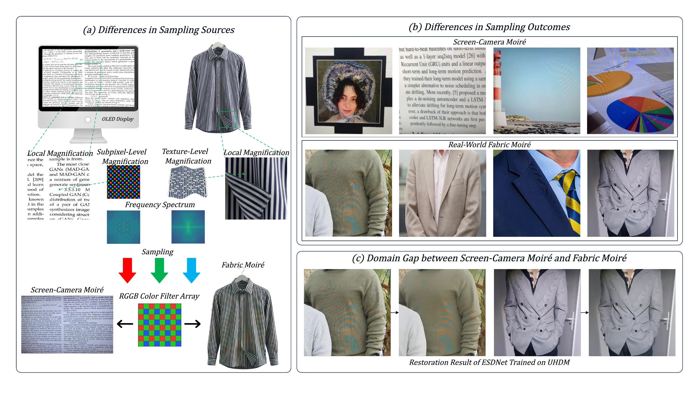
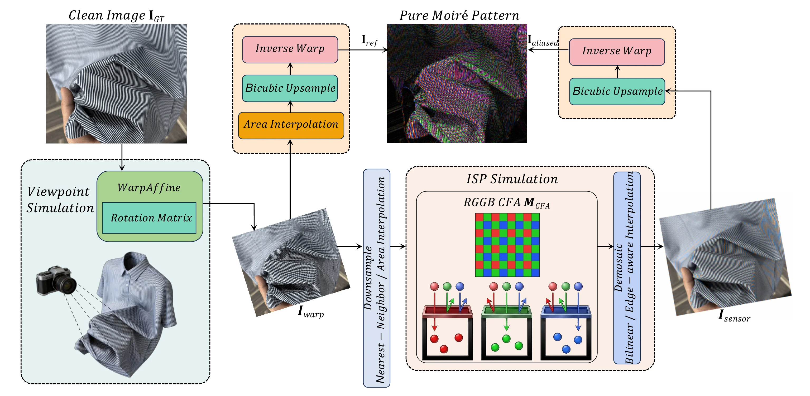
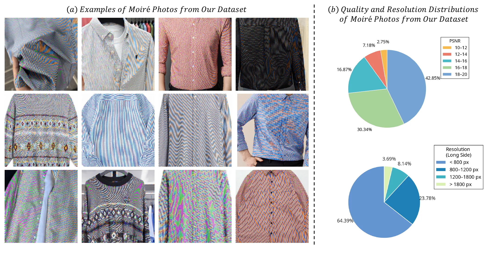
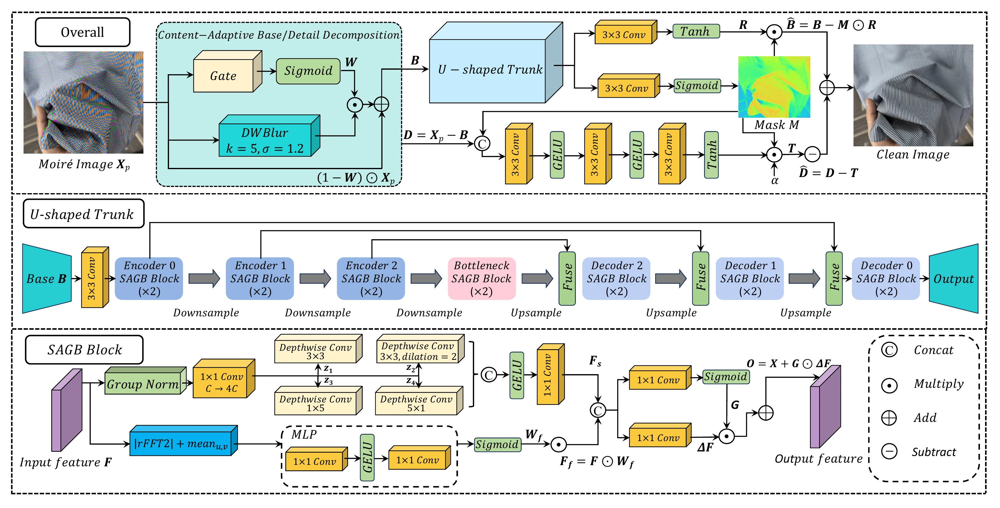
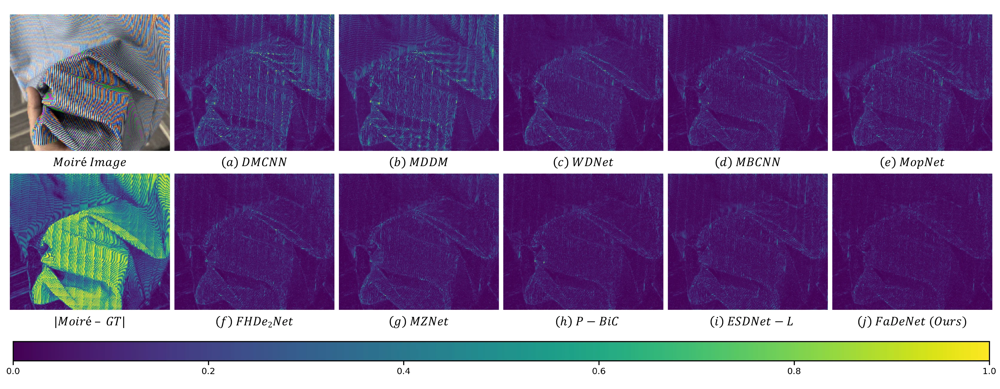
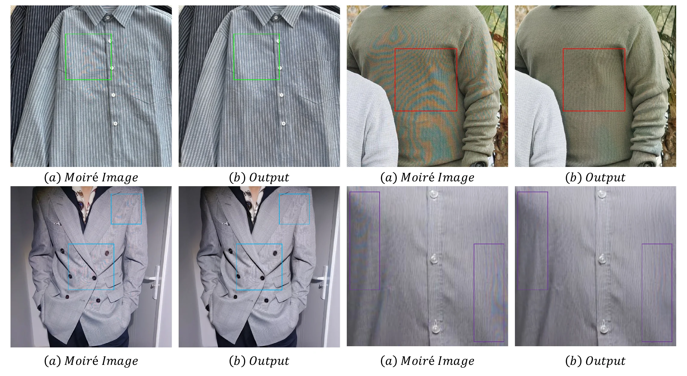
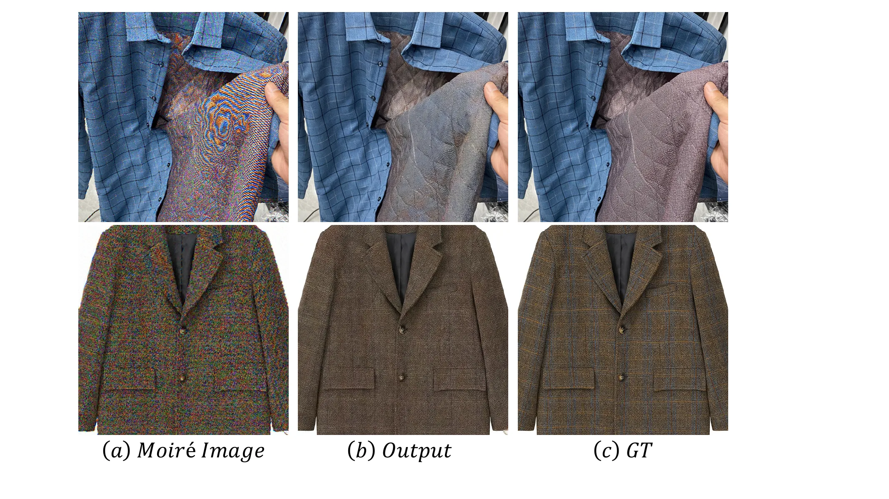

The source is different
Screen moiré comes from rigid display lattices. Fabric moiré comes from non-rigid garments with dense, anisotropic, semi-periodic weave structures, folds, and pose changes.
Existing screen-camera demoiréing work assumes a more regular sampling source and a cleaner separation between artifact and scene content. The paper argues that fabrics break both assumptions.
Screen moiré comes from rigid display lattices. Fabric moiré comes from non-rigid garments with dense, anisotropic, semi-periodic weave structures, folds, and pose changes.
In fabrics, aliasing overlaps the genuine textile spectrum. Removing interference without deleting authentic stripes, grids, and herringbone details becomes substantially more ill-posed.
Supervised demoiréing needs pixel-aligned pairs, but real garments deform. Global homography-style registration is not enough for large-scale fabric data collection.

PRISM avoids the impossible part of real fabric capture: obtaining a perfectly aligned clean garment target after non-rigid deformation. It simulates the imaging chain, extracts a moiré residual through a round-trip construction, and injects that residual back into the original clean grid.

The clean pool starts from web-collected garment images with high-frequency textile patterns, followed by duplicate removal, quality filtering, garment localization, text removal, semantic filtering, and expert inspection. The final release contains 14,587 training pairs and 1,463 testing pairs.

The method is designed around the risk identified by the motivation analysis: aggressive restoration can erase real fabric texture. FaDeNet therefore separates base and detail components and gates corrections spatially.
A content-adaptive split lets the model correct low-frequency color and illumination shifts while keeping high-frequency textile structures explicit.
Corrections are applied where the confidence mask predicts moiré-dominant regions, limiting unnecessary edits on clean fabric areas.
SAGB combines directional spatial filters with coarse-scale FFT gating to model stripe-like and narrow-band periodic interference.

On PRISM, FaDeNet outperforms representative screen-camera demoiréing baselines across PSNR, SSIM, and LPIPS. On real unpaired fabric captures, it also receives the highest MOS in the user study.
| Method | PSNR ↑ | SSIM ↑ | LPIPS ↓ | Params | FPS |
|---|---|---|---|---|---|
| Input | 16.998 | 0.7268 | 0.3495 | - | - |
| P-BiC | 28.590 | 0.9689 | 0.0334 | 4.922M | 38.17 |
| ESDNet-L | 28.809 | 0.9711 | 0.0268 | 10.623M | 19.22 |
| FaDeNet | 32.159 | 0.9859 | 0.0169 | 7.051M | 38.10 |


The failure cases reinforce the paper's central motivation: when colored moiré overlaps authentic garment patterns, restoration can still over-suppress valid textile details. Future work needs stronger texture-aware priors and real-world adaptation.

Proceedings metadata can be updated after the final camera-ready release.
@inproceedings{wei2026fabric,
title = {Fabric Image Demoir{\'e}ing Benchmark from Synthesis to Restoration},
author = {Wei, Pengchao and Guo, Xiaojie},
booktitle = {European Conference on Computer Vision},
year = {2026}
}